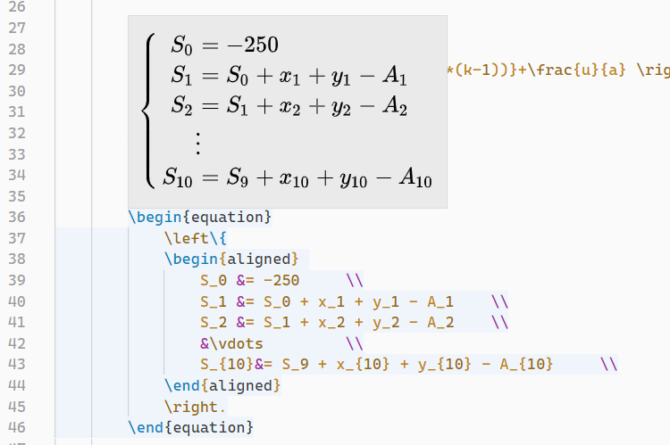
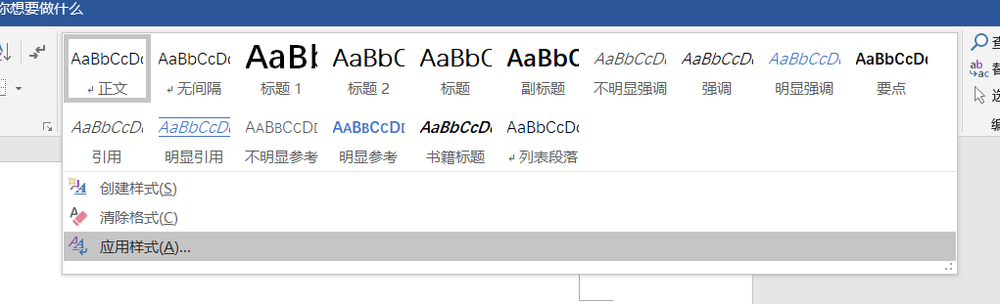
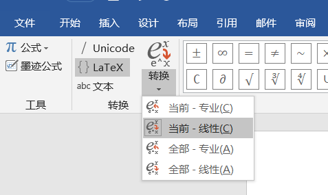
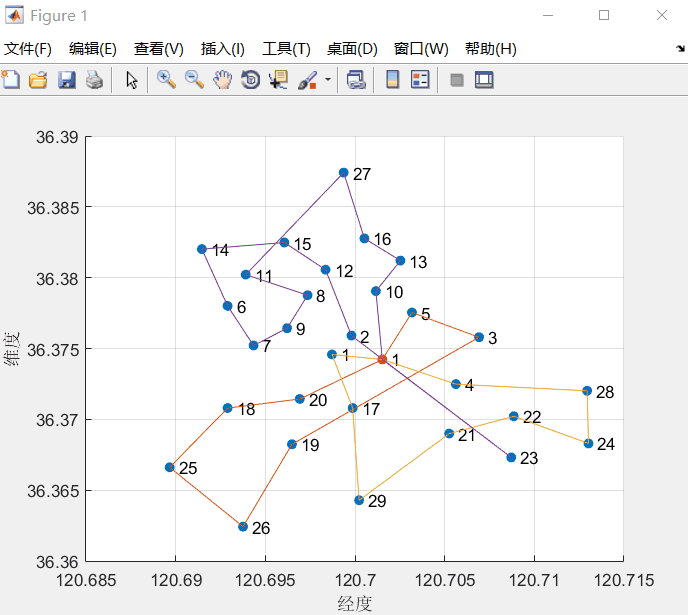
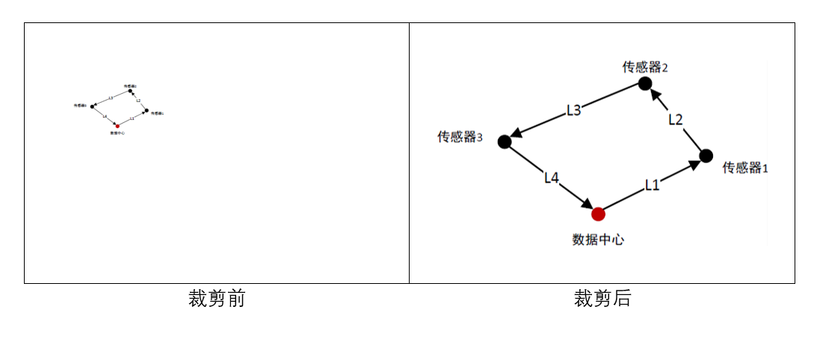

准备数学建模国赛的心得体会
😂我对准备数模国赛的一些看法，仅供参考。
我参加过两届全国大学生数学建模竞赛，我在大一的时候经人推荐和两个学姐组队准备参加数学建模国赛，从此开启了数模之旅。（感谢推荐我的人和选择我的队友，让我能认识到这样一个有意思的比赛）
这篇博文总结了我这两次准备国赛的过程和方法，希望能帮到准备参赛的学弟学妹们。
关于全国大学生数学建模竞赛
全国大学生数学建模竞赛一般在九月份进行，差不多是刚开学的第一周的周末。市赛的比赛结果比较快，一般国庆节之后就能有结果。和市赛结果一起出来的，是推荐国奖的队伍名单。推荐国奖不代表一定能拿到国奖，推荐国奖的结果一般在十一月或者十二月出来。
数模国赛总共有 5 道题，有 3 题是本科组（以前只有 2 题），有 2 题是专科组。本科组的 3 题的出题方向是有一定规律的。
规律性最强的是 C 题，它往往和统计有关，有大量的数据需要处理（但是国赛也有可能不提供数据，比如 2019 年的 C 题的数据需要自己去找）。其次是 A 题，2019 年和 2020 年的 A 题都和工业生产有关，有相关专业背景会更好做（我大一的时候看 2019 年的 A 题，当时还没学机械设计基础，所以连凸轮都不认识，题目都没读懂）。
准备国赛的时间线
我校对数学建模竞赛是相当重视的。一般在上半年就会开始校赛培训（以网课的形式），还会有数模的宣讲会以及历年获奖选手的经验分享会。然后会组织一次数学建模校赛。数学建模校赛考虑到大家都有课，比赛时长是一周，在课余时间完成比赛。
校赛之后就会组织报名国赛，以及分配指导老师。报名国赛的同学需要在放暑假后留校一星期进行暑期培训（2020 年的暑期培训因为疫情改成网课了，非常可惜，不清楚以后还有没有）。暑期培训除了上课还有一次模拟比赛，这次模拟赛由指导老师完成讲评。
在暑假期间，学校还可能会组织参与深圳杯比赛和重庆市地区的比赛，作为练习。我建议参加深圳杯的比赛，因为深圳杯的题目质量还是不错的，认真完成提交作品，说不定能收获一个大奖。其他的比赛可以看精力决定要不要参加。
在正式国赛开始前还会有第二次模拟赛，作为最终练习。
模拟赛的题目好像都是用的其他学校的题目，这些题目的难度还是偏大的，我感觉比国赛都要难，所以做不出来也不要放心上。
我对组建队伍的想法
关于组建队伍，我经常听到一种组队的说法，即数模组队需要一人建模，一人编程，一人写作。
关于这个说法，我有不同的看法。数模的队伍确实要有人建模、有人编程和有人写作，但不是把这三项任务分别分到一个人身上。我认为建模可以三个人一起来，写作则是谁建模谁写作，编程的任务实际上没有很重，只需要一个人就好了。
我两次参赛的队伍都是这样实行的。我主要负责编程和排版（第一个队伍里只有我对 Latex 比较熟，因此排版就全交给我了）。建模部分虽然我不擅长，但我也会帮一点忙。对于一些简单的问题，我会尝试自己解决，然后让队友去思考后面更复杂的问题。我也会学习我队友建立的数学模型，这样在需要编程解模型的地方，我才好写出程序。
数学建模竞赛需要学习的技能
关于论文写作与排版
论文写作和排版，选择 Latex 还是 Word？很多人认为 Latex 比 Word 更难，但是 Word 想要做到高效排版，可能不比 Latex 简单。
因为已经有前辈做好了数模国赛的 Latex 模板，所以只需要很少的 Latex 知识就可以用 Latex 来写数模国赛的论文了（数模美赛也有现成的模板）。
Latex
网上有很多的 Latex 入门教程，篇幅不长，用来入门非常适合。
但是如果想系统地了解 Latex，我建议阅读刘海洋的《Latex 入门》。（来自网络，可能失效: PDF下载）
不管是网上的教程还是《Latex 入门》，都有讲如何安装 Latex 发行版。因此这篇文章不打算展开讲如何安装 Latex 发行版。但是这里我提供 TexLive 发行版的下载地址，以免下载到旧版本，或者忍受百度网盘的缓慢速度。
TexLive 的下载地址(中国科学技术大学镜像站): https://mirrors.ustc.edu.cn/CTAN/systems/texlive/Images/
TexLive 的下载地址(重庆大学镜像站): https://mirrors.cqu.edu.cn/CTAN/systems/texlive/Images/
获取TexLive ISO镜像的官网页面：https://www.tug.org/texlive/acquire-iso.html
TexLive 官网介绍的安装方法: https://www.tug.org/texlive/windows.html
要使用 Latex 排版数模论文，要学的 Latex 知识不会很多，所以不用担心学不会。
首先你需要学会使用现成的模板，比如数模国赛的模板可以在 github.com/latexstudio/CUMCMThesis 里找到，数模美赛的模板可以在 github.com/latexstudio-org/mcmthesis 找到。
然后你需要学会使用 Latex 编写公式。我的学习方法是找一篇公式很多很复杂的论文，把里面的公式都写一遍(显示效果要一模一样，这里面可能涉及多行公式的对齐)。这个过程肯定会有很多困难，所以肯定会花很多时间在百度上，最后整理成自己的笔记，以后查自己的笔记本就快了。
最后你要学会插入图片和表格。Latex 的表格是很难用的，我推荐使用 tablesgenerator 来生成 Latex 表格代码，可以明显改善体验。(这个工具支持粘贴 Excel 或者 Word 里的表格，所以你甚至可以在 Excel 里做好表格后粘贴到这个工具里生成 Latex 代码)
这里还要强调一个 Latex 的特性。在 Word 里，你的图片和表格放哪里完全由你说了算。但是在 Latex 里，默认是让 Latex 来管理你图片和表格的位置，Latex 会在合适的位置里插入图片和表格。比如这一页的空间已经放不下一张图片了，那么 Latex 会在下一页的某个位置放置这个图片。
对此我的解决方法是：不要管他，让 Latex 自己选择位置就好了。
所以，文章里尽量不要写 “如下图所示” 之类的文字，因为图片很可能不在你这段文字的下方。尽量用 “如图 \ ref{XXX} 所示” 的写法代替。
提示： \ ref{XXX} 是创建交叉引用，XXX 是图片或者表格的标签，Latex 会自动将它替换成编号，比如可能替换成：如图 5 所示
Latex 编辑器有很多，如果熟悉 VSCode，也可以尝试以下 VSCode (+LaTeX Workshop插件) 来写 Latex。这个插件有一个预览公式的功能，写公式的时候不用编译就能先看到结果。

如果三个队友都使用 Latex 写作，可以用 overleaf 这个在线编辑器来同时编辑同一份文档。(但是这个网站国内访问速度很慢)
如果所有队友都会 git，也可以用 git + github/gitee 来实现一起编辑同一份文档。
Word
在数模中没用过 Word 来写作，所以我没什么能介绍的东西。
我推荐充分利用 Word 的样式功能，减少设置样式的工作量，可以提高排版效率。

另外就是 Office 2019 版本或者 Office 365 版本的 Word 支持用 Latex 编写公式，如果想在 Word 里使用 Latex 可以升级到 2019 版本或者购买 365 版本。

关于编程和算法
Matlab
如果有编程基础的话，学习 MATLAB 是很快的事情。学校图书馆有很多 MATLAB 的书，这些书里甚至有不少和数模是有关的。我借了四五本 MATLAB 的教材，挑了两本我能看懂的就开始学了。(现在有的书真的是不喜欢讲人话，所以我借书都会借四五本，把不讲人话的书都还回去)
MATLAB 只是个工具，不要花太多时间去专门学习，应该在有需要的时候再去查资料查文档。我入门 MATLAB 大概只用了一个星期，主要是浏览和尝试各种常见函数，也就是运行书上给的例子。(其实书上有很多概念对当时的我来说并不常见，比如我当时根本不认识线性规划和数值积分，我的策略是先了解，留个印象以后方便翻书)
MATLAB 的内置函数很多，而且用法和新函数随着版本升级一直在变化，是记不住也没必要记住的。如果有什么书列举了一大堆的函数用法，那一定不是什么好书。我认为学习 MATLAB 的很重要的一点是学会从 MATLAB 的官方文档里找到答案。
MATLAB 官网的快速入门中文教程：https://ww2.mathworks.cn/help/matlab/getting-started-with-matlab.html
MATLAB 文档：https://ww2.mathworks.cn/help/index.html
有一些常用的制图函数，比较简单可以提前学一下记录到笔记本，要用的时候查资料快一点。
比如 plot(散点图)、fplot(函数画图)、gplot(邻接矩阵画图)、bar(条形图)、subplot(在一个窗口画子图)、xlabel(X坐标的标签)、ylabel(Y坐标的标签)、gtext(在图中写文字)、legend(显示图例)等。
还有指令 hold on; grid on;

最后我推荐一下 Matlab 的 cftool 工具箱，这是个曲线拟合工具箱，经常能用到。
Lingo
LINGO是专门用来求解优化模型的软件。我做的第一个数模的练习题就是用线性规划来解决下料问题，我因此自学了 LINGO。
我看的教材是网上翻到的一个小册子，出处已经找不到了，我感觉讲的还是比较清晰的。(下载: LINGO入门)
1 | sets: |
如果要用到线性规划，我会先用少量数据，编写 LINGO 程序来验证线性规划模型的正确性。
这是因为 LINGO 的语法比较接近自然语言，如果模型错了改起来比较方便。而 Matlab 线性规划函数(linprog)的参数是一个个矩阵，不如 LINGO 的语法直观。
求结果的时候，由于数据很多，而且往往需要预处理，我会用 Matlab 编程来求解最终答案。
Mathematica
Mathematica 是我学习数学的工具。它不像别的编程语言需要创建一个源代码文件来写代码，Mathematica 需要创建一个笔记本来写代码。Mathematica 可以把计算的过程一步一步显示出来，这是我最喜欢的功能之一。
Matlab 有的功能 Mathematica 基本都有，如果更喜欢 Mathematica 那么可以用它来代替 Matlab 也不是不可以的。
但我比赛中并没有用过 Mathematica，因为我用它没有 Matlab 熟练。
Python
我没有在比赛中用过 Python，但是我的队友使用 Python 进行多元回归分析和使用现成的智能优化算法 (scikit-opt)。
我推荐学习一下这个智能优化算法库，它内置了遗传算法、模拟退火等常用的智能优化算法。我在深圳杯的比赛是自己写的模拟退火算法，看了好几篇论文当场学会当场写算法，如果我当时知道有这个库，我可以节约一个下午的时间。
R语言
我也没在比赛中使用过 R 语言，因为我不会。但是我应用统计专业的队友是会的。数模暑期培训也会简单讲解这个 R 语言，它在解决统计相关的问题很有用。
SPSS Statistics
这个软件我也提供不了什么有用的信息，因为我自己也不会。我认为要在学习了应用回归分析之后才能正确地使用 SPSS，而不是自己根据网络的教程胡乱分析(说的就是我自己了)。
关于应用回归分析，我的指导老师推荐了一本书是《应用回归分析（第5版）》(何晓群，刘文卿 著)。
关于作图
函数图、散点图等图像可以用上面提到的 Matlab 来完成，这里主要说的是流程图。
流程图可以用 PowerPoint 或者 Visio 来完成。Visio 其实也是 Office 的一部分，不过要单独下载。(下载地址，来自网络，可能失效：msdn.itellyou.cn；xyhelp.cn)
tianyou 是交大以前的软件下载站，现在已经无人维护。xyhelp 是交大学长的创业项目，里面的软件基本都有校园网内网的下载地址，只要连上校园网就可以下载，内网传输速度更快。
高版本的 Office 已经支持直接导出为 PDF，我推荐将画好的图像导出为 PDF 再插入到 Latex 文章里。这样保存、插入到论文里的图片是矢量的，怎么放大都是清晰的。
从 Office 文档里导出的 PDF 一般都有白边，可以使用 Latex 发行版里自带的一个 PDF 裁剪工具(pdf-crop)，将白边去掉。

pdfcrop 是个命令行工具，装好 Latex 发行版之后一般就能直接用了。
1 | # 在 img_001.pdf 所在目录执行 pdfcrop： |
上面的指令会在 img_001.pdf 目录下生成一个 img_001-crop.pdf。
大量数据预处理
有的比赛会发布一个很大的数据集，格式通常是 csv 文件。这个类型的文件可以用 excel 打开，但是尽量别这样做，excel 需要很长时间（长达几分钟）才能打开。
csv 文件是纯文本文件，可以用 VSCode 等文本编辑器打开，这样速度会快很多。
其实我不会处理数据的，所以接下来我写不下去了。🤣
比赛期间的感受
比赛第一天的下午 18 点出题到第四天的晚上 20 点结束，这期间的节奏是一种先慢后快的节奏。
数模选题很重要，数模国赛没有简单的题目，数模的选题选的是最适合自己团队的题目。
我认为我两次比赛的队伍都很适合解决和运筹学相关的题目，因为平时模拟赛都对这种题目更有感觉。如果选题确实不对，是可以大胆考虑换题的。我两次比赛都有过换题的经历，一次换成功了，第二次最终没有换题。
我第一次比赛是第二天上午决定题目，然后第三天上午换题，最后拼命完成。这一次比赛我们一开始选的是 A 题，之所以选这个题是因为 B 题没看懂而C 题的数据不好找。我们这样选题完全没考虑团队的做题经验，我们从没做过 A 题这样的题目。可以说我们选题很失败，我们做不出来 A 题。
我们为了能够交上作品，我们换了 C 题，换题的时候已经浪费了一半的时间了，所以第三天的晚上我们不得不通宵写论文了。
做 C 题的时候才发现，我们的队伍更适合做 C 题，这个题对我们来说并没有选题时想象的难，最后做的非常快及时完成了作品。
第二次比赛实际上我们选对了题，我觉得那个题真的很适合我们队伍，但是我们没有解题的思路，所以考虑换题。那个时候是第二天晚上，即使是换题也来得及。但是凭借上一次比赛的经验，我从我们队伍以前的选题情况来看，我很确定我们不适合另外两道题。这一次我们选的是 B 题，“走出沙漠” 的题目。另外两道题分别是 A 题 “炉温曲线” 和 C 题 “信贷决策”。
我们队伍在练习赛中从未选过 A 题这种类型，所以我心里压根没有想过换到 A 题。C 题这种类型的题目我们只做过 1 次，而且做的很糟糕，我对换到 C 题也不抱希望。
但是我也怕死磕 B 题，错失了换题的最佳时机。所以我和我的队友说先放下 B 题，找一找 C 题的资料，看看 C 题有没有思路，如果有我们就换题。
一开始我也在找 C 题资料，但是我发现我查到的方法，我都没见过，不仅如此，我不知道这些方法能不能套用到这个 C 题上。这时候我就知道，我们不可能换到 C 题的。如果随便搜到个方法就拿来套用，连适用条件都搞不清楚，这样做出的结果连自己都骗不过。所以后来我又回到 B 题，继续找 B 题的解法了。
最终我们队伍决定死磕 B 题。
准备数学建模国赛的心得体会